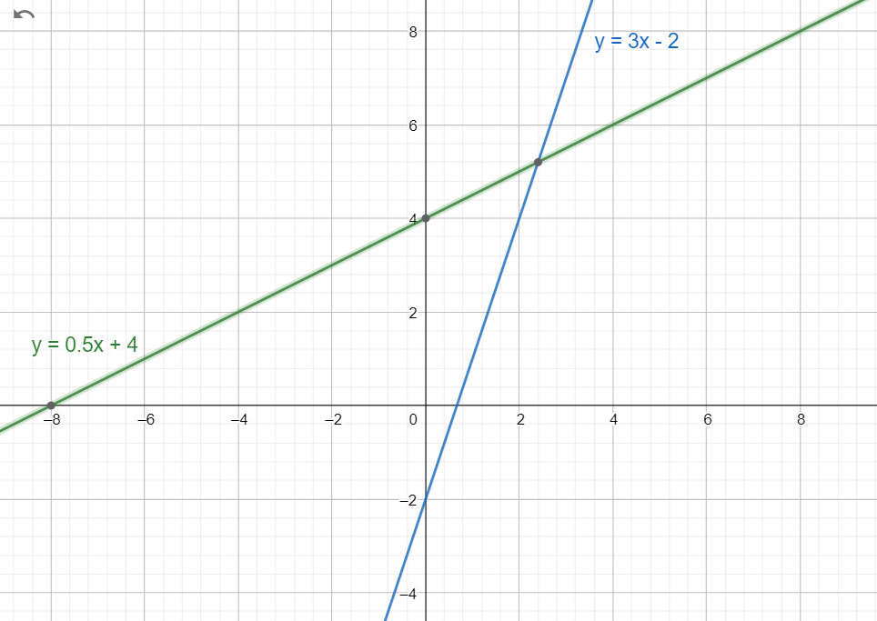

Lineaarinen malli
Contents
Lineaarinen malli#
Lineaarinen malli tarkoittaa käytännössä samaa asiaa kuin ensimmäisen asteen polynomifunktio. Ensimmäisen asteen polynomifunktio tarkoittaa polynomia, jossa muuttuja esiintyy siten, että sen eksponentti on 1. Ne ovat siis muotoa \(f(x)=ax+b\). Usein tämä kirjoitetaan muodossa \(y=ax+b\).
Lineaarisella mallilla voidaan kuvata esim. kasvien tai eläinpopulaatioiden kasvua, johonkin prosessiin liittyviä kustannuksia, hinnan muuttumista jonkin ominaisuuden (esim. käytetyn tuotteen ikä) muuttuessa tms. Mallissa muutos tapahtuu lineaarisesti: aina kun \(x\) muuttuu tietyn verran, \(y\) muuttuu aina yhtä paljon riippumatta siitä, mitkä ovat lukujen \(x\) ja \(y\) alkuperäiset arvot. Esimerkiksi jos lähikaupassa kahvipaketin hintaa laskettaisiin 6.90 eurosta 6.50 euroon, saattaisi päivässä ostettujen pakettien määrä kasvaa 20:lla. Jos hintaa laskettaisiin vielä uudelleen saman verran 6.10 euroon, myynti kasvaisi taas 20 paketilla.
Kulmakerroin ja leikkausvakio#
Jos tällaisen funktion kuvaaja piirretään koordinaatistoon, tuloksena on suora viiva. Suoran sijainti pystyakselin suunnassa, suoran ja vaaka-akselin leikkauskohta sekä suoran nousu- tai laskukulman jyrkkyys selviävät suoran yhtälöstä.
Yhtälön \(y=ax+b\) parametria \(b\) sanotaan leikkausvakioksi, sillä funktion kuvaaja leikkaa y-akselin pisteessä \((0,b)\).

Esim. Kuvassa on suorat \(y=0.5x+4\) ja \(y=3x-2\).
Parametria \(a\) sanotaan kulmakertoimeksi. Se kuvaa sitä, kuinka nopeasti \(y\):n arvot muuttuvat \(x\):n arvon muuttuessa. Jos kulmakerroin on positiivinen, suora on nouseva, ja jos kulmakerroin on negatiivinen, suora on laskeva.

Esim. Kuvassa on suorat \(y=x+2,y=3x+2,y=-2x+3\).
Suoran yhtälön muodostaminen#
Suoran yhtälö \(y=ax+b\) voidaan muodostaa, jos tiedetään suoralta kaksi pistettä \((x_1,y_1)\) ja \((x_2,y_2)\).
Ensin lasketaan kulmakerroin \(a=\frac{y_2-y_1}{x_2-x_1}\)
Sen jälkeen ratkaistaan leikkausvakio \(b\) yhtälöstä \(y=ax+b\), siis \(b=y-ax\). Leikkausvakion arvo saadaan sijoittamalla yhtälöön joko \((x_1,y_1)\) tai \((x_2,y_2)\).
Esimerkki
Muodosta yhtälö suoralle, joka kulkee pisteiden \((x_1,y_1)=(-3,-2)\) ja \((x_2,y_2)=(7,1)\) kautta.
Ratkaisu
Kulmakerroin: \(a=\frac{y_2-y_1}{x_2-x_1}=\frac{1-(-2)}{7-(-3)}=\frac{3}{10}=0.3\)
Leikkausvakio: \(b=y_1-ax_1=-2-0.3\cdot (-3)=-1.1\) tai \(b=y_2-ax_2=1-0.3\cdot 7=-1.1\)
Yhtälö on siis \(y=0.3x-1.1\).
Suoran yhtälön käyttöä#
Suoran yhtälöstä voidaan laskea joko luvun \(y\) arvoja, kun luku \(x\) muuttuu, tai luvun \(x\) arvoja, kun luku \(y\) muuttuu.
Esimerkki
Pienessä tehtaassa tuotteiden valmistuskuluja kuvaa yhtälö \(y=2.5x+950\), missä \(x\) on tuotteiden määrä ja \(y\) näiden tuotteiden valmistukseen kuluva rahamäärä.
a) Paljonko maksaa valmistaa 150 tuotetta?
b) Paljonko ovat kulut, vaikka ei valmistettaisi yhtään tuotetta?
c) Kuinka monta tuotetta voi valmistaa, kun käytössä on 2000 €?
Ratkaisu
a) Sijoitetaan yhtälöön \(x=150\) ja lasketaan \(y=2.5\cdot 150+950=1325\).
b) Sijoitetaan yhtälöön \(x=0\) ja lasketaan \(y=2.5\cdot 0+950=950\).
c) Sijoitetaan \(y=2000\) suoran yhtälöön ja ratkaistaan \(x\):
\(2000=2.5x+950\)
\(2.5x=2000-950\)
\(2.5x=1050\)
\(x=\frac{1050}{2.5}\)
\(x=420\)
Suorien leikkauspisteen laskeminen#
Jos tiedetään kaksi suoraa \(y=ax+b\) ja \(y=cx+d\), niiden leikkauspiste löytyy ratkaisemalla yhtälö \(ax+b=cx+d\) ja sijoittamalla saatu \(x\):n arvo kumman tahansa suoran yhtälöön.
Esimerkki
Laske suorien \(y=4x+3\) ja \(y=7x+15\) leikkauspiste.
Ratkaisu
Ratkaisu saadaan yhtälöstä
\(4x+3=7x+15\)
\(4x-7x+3=15\)
\(4x-7x=15-3\)
\(-3x=12\)
\(x=-\frac{12}{3}\)
\(x=-4\)
Lisäksi saadaan pisteen y-koordinaatti laskemalla joko \(y=4\cdot(-4)+3=-16+3=-13\) tai \(y=7\cdot(-4)+15=-28+15=-13\).
Leikkauspiste on siis \((x,y)=(-4,-13)\).
Sovelluksia#
Suoran yhtälö on hyvin yksinkertainen ja toisinaan myös käyttökelpoinen matemaattinen malli. Mallin heikkous on se, että mukana on vain yksi muuttuja \(x\). Ajatellaan vaikka, että kerrostaloyksiön hinnalle yritettäisiin laatia malli siten, että muuttujana olisi etäisyys torilta. Aivan torin laidalla sijaitsevan asunnon hinta olisi 100 000 euroa, ja jokainen kilometri pudottaisi hintaa 5000 eurolla. Tällöin malli olisi \(y=-5000x+100000\). Malli antaisi jonkinlaisen arvion hinnalle, mutta ei huomioi asunnon ikää, kokoa, varustelutasoa, kuntoa jne.
Suoran yhtälö ei myöskään sovellu kaikkiin ilmiöihin. Esimerkkejä muista sopivista malleista käsitellään Tilastotieteen opintojaksolla. Siellä tarkastellaan myös sellaisia lineaarisia malleja, joissa muuttuja on kaksi (esimerkiksi asunnon ikä ja koko). Tavallinenkin suoran yhtälö kyllä voi sopia hämmentävän hyvin joihinkin ilmiöihin. Esimerkiksi Suomesta löytyy kuntia, joiden väkiluku on viime vuosina laskenut varsin tarkasti suoran yhtälöä mukaillen.
Esimerkki
Autokauppias on todennut, että tietyn merkkinen auto maksaa 3 vuotta käytettynä keskimäärin 16 000 € ja 8 vuotta käytettynä keskimäärin 10 500 €. Hän haluaisi laatia mallin, jonka avulla voi hinnoitella minkä tahansa ikäisiä autoja.
a) Muodosta yhtälö \(y=ax+b\), jossa \(y\) on auton hinta ja \(x\) auton ikä.
b) Paljonko maksaisi 12 vuotta auto?
c) Minkä ikäisen auton saisi 13 000 eurolla?
Ratkaisu
a) Tunnetut pisteet ovat: \((x_1,y_1 )=(3,16000)\) ja \((x_2,y_2)=(8,10500)\)
Lasketaan kulmakerroin: \(a=\frac{10500-16000}{8-3}=-\frac{5500}{5}=-1100\)
Lasketaan leikkausvakio: \(b=y_1-ax_1=16000-3\cdot (-1100)=19300\) tai \(b=y_2-ax_2=10500-8\cdot(1100)=19300\).
Yhtälö on siis \(y=-1100x+19300\). Mallin mukaan uusi auto maksaisi 19300 €, ja jokainen käyttövuosi alentaisi hintaa 1100 eurolla.
b) Sijoitetaan yhtälöön \(x=12\) ja lasketaan: \(y=-1100\cdot12+19300=6100\)
c) Sijoitetaan yhtälöön \(y=13 000\) ja ratkaistaan \(x\):
\(13000=-1100x+19300\)
\(13000-19300=-1100x\)
\(-1100x=-6300\)
\(x=\frac{-6300}{-1100}\)
\(x=5.7\)
Esimerkki
Oletetaan, että eräiden kaupunkien asukaslukua voidaan arvioida yhtälöllä \(y=ax+b\), missä \(x\) on tästä hetkestä kuluneiden vuosien määrä, \(y\) on asukasluku kyseisenä ajankohtana, \(a\) on asukasluvun muutos vuodessa ja \(b\) on asukasluku nyt.
Kaupungin A asukasluku on nyt 50 000, ja sen arvioidaan vähenevän 250 asukkaalla vuodessa. Kaupungin B asukasluku on nyt 28 000, ja sen arvioidaan kasvavan 750 asukkaalla vuodessa. Milloin kaupungin B asukasluku on yhtä suuri kuin kaupungin A asukasluku?
Ratkaisu
Kaupungin A asukaslukua kuvaava yhtälö on siis \(y_A=-250x+50 000\). Kaupungin B asukaslukua kuvaava yhtälö on \(y_B=750x+28 000\). Ratkaistaan yhtälö \(y_A=y_B\):
\(-250x+50 000=750x+28 000\)
\(-250x-750x+50 000=28 000\)
\(-250x-750x=28 000-50 000\)
\(-1000x=-22000\)
\(x=22\)
Asukkaita on siis yhtä paljon 22 vuoden kuluttua. Asukkaiden määrä on \(y_A=-250⋅22+50 000=44 500\) ja \(y_B=750⋅22+28 000=44 500\).
Oikean datan mallinnus
Kun tehdään johonkin oikeaan dataan perustuvaa matemaattista mallia, käytetään enemmän kuin kahta pistettä (x,y). Mikään suora ei kulje täsmälleen kaikkien pisteiden kautta, joten suoran yhtälöä ei voida muodosta edellä kerrotuilla menetelmillä.

Esim. Kuvaajassa pisteet kuvaavat Kalifornian osavaltion väkilukua eri vuosina, ja katkoviiva esittää lineaarista mallia, joka kuvaa väkilukua parhaalla mahdollisella tavalla.
Laskentaohjelmat etsivät suoran, joka kuvaa datajoukkoa mahdollisimman hyvin. Matemaattinen toimenpide on etsiä avulla “pienimmän neliösumman” toteuttava suora. Pienin neliösumma tarkoittaa summaa seuraavista luvuista jokaisesta datapisteestä laskettuna: (datapiste – suoran piste)\(^2\). Pienimmän neliösumman voi etsiä differentiaali- tai matriisilaskennan keinoin (Differentiaali- ja integraalilaskennan opintojakso) tai käyttää apuna esim. Exceliä.